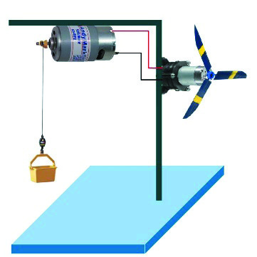

كيف تعمل الرافعة الكهربائية؟
تدير الرياح عنفة موصولة بمولّد. تصل الكهرباء إلى محرك يلف خيطًا على بكرة، فيرتفع حمل صغير. المولّد ينتج الكهرباء من الحركة؛ والمحرك يحوّل الكهرباء إلى حركة.
- الرياح والعنفة
- المولّد
- المحرك والبكرة
- ارتفاع الحمل
اختبر كيف تؤثر شدة الرياح والحمل في رفع جسم صغير، وتتبّع انتقال الطاقة عبر المولّد والمحرك.
تعلّم وافهم
تدير الرياح عنفة موصولة بمولّد. تصل الكهرباء إلى محرك يلف خيطًا على بكرة، فيرتفع حمل صغير. المولّد ينتج الكهرباء من الحركة؛ والمحرك يحوّل الكهرباء إلى حركة.
إذا كان الحمل أثقل من قدرة المحرك فلن يرتفع، حتى لو كانت العنفة تدور. نحتاج إلى توازن بين الطاقة المتاحة والحمل، مع تقليل الاحتكاك.
استقصاء تفاعلي
من الشاشة إلى العمل

دفتر النشاط
لا تُرسل الإجابات إلى المعلم تلقائيًا. احفظ نسخة قبل إغلاق الصفحة، وامسح مسودتك عند استخدام جهاز مشترك.
المصدر الأساسي: كتاب التكنولوجيا للصف التاسع، الجزء الأول، الدرس الثاني، الصفحات ١٣–٢١. الرسوم التفاعلية تبسيط تعليمي وليست أجهزة قياس.